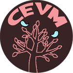

Ph.D. Project: A Performance Prediction Model for Heterogeneous Processors
Performance prediction model is essential for running applications on heterogeneous processors. In previous studies, there are no generalized performance prediction model for heterogeneous systems. Most of them evaluate the performance of GPU based on CUDA source code and runtime environment. This study will extend the previous studies by creating a generalized the prediction model based on OpenCL source code and developing a methodology to facilitate the prediction. This model is an analytical model using hardware profiles and software algorithms as input parameters.
Ph.D. Student: Pichet Wongvibulsin
Advisor: Dr. Kasidit Chanchio
Science Cloud, Thammasat University
The Science Cloud project aims to create a Cloud Computing infrastructure to support computational research at Thammasat University. The project is built using the opensource OpenStack Cloud management software. The system is currently being used for scienctific computation, software developments and class room instructions.
- See the Science Cloud Community web page for Science Cloud-related information.
Another objective of the Science Cloud project is to create tools to ease OpenStack deployment and optimize its performance. Recently, we have created a set of shell scripts to assist OpenStack Icehouse installation. They are available for download below.
DOWNLOADS:
- OpenStack (Icehouse) Installation Script: You can get it from:
- OpenStackInstaller github page or
- directly at OpenStackInstaller.tar
- You may use our installation parameter generator web page in the helper sub-directory of the above tar file to help define installation parameter values.
- Installation Instructions
- Installation youtube video playlist
Virtual Machine Migration and Checkpointing System
The Virtual machine Migration and Checkpointing (VMiCh) System is a software system that provides resilience and fault tolerance for virtual machines using Thread-based Live Migration (TLM) and Thread-based Live Checkpointing (TLC) mechanisms. In the Figure below, VMiCh’s architecture consists of three basic components:
- TLC/TLM extension to KVM: captures VM state and uses TLM or TLC mechanisms to migrate VM state live to a destination VM or checkpoint VM state to backup storages, respectively (See 3 in the Figure).
- Vasabi Manager Agent: receives instructions from users and administers the migration or checkpointing operations (See 1 & 2).
- Vasabi Reporter Agent: collects runtime status of the migration and checkpointing operations and reports their progress live to the web (See 4).
DOWNLOADS: TLM/TLC Software and Documentation.
VMiCh Architecture
Our preliminary research results can be found in the TLC paper presented at the IEEE NCA 2011 conference.
The Virtual Cluster-based Coordinated checkpointing Protocol (VCCP)
We have reported our proof of concepts VCCP implementation and experiments in our VCCP paper presented at IEEE Cluster 2009. We are planning to investigate the following new research topics: The integration of TLC mechanism and VCCP protocol The design and development of a novel virtual network that can seamlessly inter-operate with the VCCP protocol and provide scalable data transmission performance among virtual machines.
Previous Projects:
SushiCloud OpenStack Testbed
This project has the following objectives:
- Create a Cloud Computing Platform to support research at Thammasat University and partner organizations.
- Accumulate practical knowledge and experiences on Cloud deployment and operations.
- Study OpenStack Cloud OS in order to integrate our advanced Fault Resilient and Cloud management mechanisms to it.
This is our blog built and run on SushiCloud.
DOWNLOADS:
- OpenStack (Folsom) Installation Script: vasabi-openstack-install-0.1.0.tar
- Installation Documentation blog and PDF (in Thai)
- Installation Youtube videos (in Thai)
The Checkpointing-Enabled Virtual Machine (CEVM)
The Checkpointing-Enabled Virtual Machine (CEVM) project is a project to create an efficient, hypervisor-based checkpointing mechanism exploiting available resources in multiprocessing environments. We have concluded this project and presented our results in this thesis and the "An Efficient Virtual Machine Checkpointing Mechanism for Hypervisor-based HPC systems" paper.